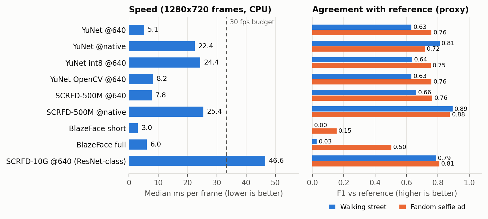

Face detection and tracking: model benchmark on two real videos
FaceTrack project, Phases 1–2 · 12th Gen Intel(R) Core(TM) i7-12650H, 10 cores, ONNX Runtime / OpenCV / MediaPipe on CPU only · all numbers measured locally, except where marked proxy
Verdict. Use YuNet + ByteTrack on ONNX Runtime as the default: 5.1 ms per frame at 640 px, 0.2 MB, MIT code and weights.
The decisive lever on real footage is input resolution, not model size: running YuNet at native 720p found 5.8 faces per frame on the street video
against 3.3 at 640 px, at 22 ms (both videos, median). The heavy ResNet-class detector (SCRFD-10G) costs 47 ms and still agrees less with the reference than a small model run at native resolution.
The BlazeFace models are not usable on distant faces. ArcFace is a recognition model, so it cannot replace a detector, and run on every face every frame it is far over budget.
1. What was tested, and how far to trust it
- Videos (streamed through yt-dlp, never saved; frames kept in memory only, JPEG q95): A “People Walking Free Stock Footage, Royalty-F…” (Montreal Walking Tours) and B “The Bigger the Fandom, the Bigger the Selfie…” (OPPO India).
Both read as 1280×720 H.264; the first 900 frames of A (30 s, 30 fps) and 750 frames of B (30 s, 25 fps). Every model received the same decoded frames.
- Models: YuNet (ONNX Runtime, int8, OpenCV build), SCRFD-500M-KPS, MediaPipe BlazeFace short and full range, plus SCRFD-10G (ResNet-class). Trackers: IoU, SORT, ByteTrack with the project defaults. All 9 detector configurations × 3 trackers = 27 combinations were run on each video.
- No human ground truth exists for these videos. Speed, faces per frame and track statistics are measured. “Agreement” compares each model with a heavy reference (SCRFD-10G at native resolution, every 3rd frame, score ≥ 0.6); it is a proxy, not accuracy. The reference is itself imperfect and from the same model family as two of the rows, which flatters them.
Video B is an advert whose set is covered in printed posters, so many “faces” are printed ones; detectors that fire on them are not necessarily wrong.
- One run on one laptop (plugged in, nothing else running), so small timing differences between models are not significant; tail latencies (p95) are noisier than medians.
2. Detector comparison
| Model | ms/frame
median (p95) | A · street, small faces | B · selfie ad, larger faces | WIDER AP50
(earlier test) |
|---|
| faces/frame | F1 vs ref | recall <24 px | faces/frame | F1 vs ref | recall ≥64 px |
|---|
| YuNet @640 | 5.1 (8) | 3.3 | 0.63 | 0.25 | 5.0 | 0.76 | 0.97 | 0.487 |
| YuNet @native | 22.4 (53) | 5.8 | 0.81 | 0.73 | 8.4 | 0.72 | 0.97 | 0.654 (@1024) |
| YuNet int8 @640 | 24.4 (32) | 3.3 | 0.64 | 0.26 | 5.1 | 0.75 | 0.97 | – |
| YuNet OpenCV @640 | 8.2 (12) | 3.3 | 0.63 | 0.25 | 5.0 | 0.76 | 0.97 | – |
| SCRFD-500M @640 | 7.8 (12) | 3.1 | 0.66 | 0.28 | 4.0 | 0.76 | 0.98 | 0.576 |
| SCRFD-500M @native | 25.4 (33) | 5.2 | 0.89 | 0.80 | 5.8 | 0.88 | 0.97 | – |
| BlazeFace short | 3.0 (4) | 0.0 | 0.00 | 0.00 | 0.7 | 0.15 | 0.19 | 0.035 |
| BlazeFace full | 6.0 (7) | 0.3 | 0.03 | 0.00 | 2.0 | 0.50 | 0.72 | 0.145 |
| SCRFD-10G @640 (ResNet-class) | 46.6 (52) | 3.9 | 0.79 | 0.47 | 5.7 | 0.81 | 1.00 | 0.709 |
| SCRFD-10G @native (reference) | 192 | 5.5 | – | – | 5.8 | – | – | – |
ms/frame = median of the two videos, end to end (preprocess + inference + postprocess); detectors that fuse stages are timed as one. Faces/frame counted at each model’s default score threshold. Recall columns = share of reference faces of that pixel height that the model also found (IoU ≥ 0.5).
Blue rows = recommended default and the best native-resolution alternative (non-commercial weights).

3. What the numbers say
- Resolution decides small-face recall. On video A, 640 px YuNet finds only 25% of the reference’s faces under 24 px; native resolution finds 73% (SCRFD-500M: 28% → 80%). It costs about 4× the time but stays under the 33 ms/30 fps budget at the median.
YuNet’s p95 at native size on A is 53 ms, so weaker CPUs should use 640 px or
detect every 2nd frame unless faces are large (phone timings were not measured here).
- SCRFD-500M vs YuNet. At native size SCRFD-500M agrees better with the reference (F1 0.89 / 0.88 vs 0.81 / 0.72) at similar cost, but that is the favoured family, and its weights are non-commercial (InsightFace). YuNet is the safe default; SCRFD is an upgrade for research use.
- int8 YuNet is slower, not faster (24 ms vs 5.1 ms) on this CPU, probably because the model is so small that quantisation overhead outweighs the saved arithmetic (cause not profiled). The OpenCV build is a few ms slower than ONNX Runtime and returns the same face counts.
- BlazeFace fails here. Short-range found 0.00 faces per frame on A and full-range 0.30 (reference: 5.5). Even on B’s large faces its recall is 0.19 (short) and 0.72 (full) against 0.97 for YuNet.
They run at a fixed 128/192 px input and are designed for near faces (the short-range model for selfie distance), which matches the WIDER result in the main report. They are the fastest (3.0 ms for the short-range model) but only suit a near-camera selfie use case.
4. Tracker comparison on real footage (no identity ground truth)
| Detector | A · street: track IDs issued (share lasting <1 s) | B · selfie ad: track IDs issued (share lasting <1 s) |
|---|
| IoU | SORT | ByteTrack | IoU | SORT | ByteTrack |
|---|
| YuNet @640 | 126 (54%) | 152 (64%) | 143 (61%) | 134 (40%) | 167 (48%) | 169 (47%) |
| YuNet @native | 206 (60%) | 236 (66%) | 235 (58%) | 205 (47%) | 271 (55%) | 262 (52%) |
| YuNet int8 @640 | 124 (59%) | 141 (64%) | 140 (57%) | 134 (41%) | 168 (49%) | 171 (47%) |
| YuNet OpenCV @640 | 127 (54%) | 153 (64%) | 144 (61%) | 134 (40%) | 167 (48%) | 169 (47%) |
| SCRFD-500M @640 | 60 (40%) | 63 (49%) | 62 (42%) | 63 (39%) | 81 (46%) | 82 (45%) |
| SCRFD-500M @native | 111 (52%) | 110 (56%) | 105 (49%) | 92 (39%) | 112 (47%) | 112 (44%) |
| BlazeFace short | 1 (0%) | 1 (0%) | 1 (0%) | 13 (55%) | 14 (58%) | 14 (58%) |
| BlazeFace full | 23 (92%) | 21 (91%) | 19 (67%) | 38 (49%) | 47 (58%) | 48 (58%) |
| SCRFD-10G @640 (ResNet-class) | 87 (47%) | 87 (57%) | 84 (46%) | 92 (38%) | 112 (43%) | 113 (41%) |
All 27 detector × tracker combinations per video are shown. Tracker cost was at most 0.86 ms per frame in every run, negligible next to detection. With no labelled identities, “IDs issued” mixes real new people with fragments and false tracks, so fewer is not automatically better.
- No tracker is consistently lowest. With YuNet, IoU issues the fewest IDs but also keeps the fewest faces on screen (@640 on A: 3.0 confirmed faces on average vs 3.7 for ByteTrack), while with SCRFD-500M @native, SCRFD-10G and BlazeFace full on A, ByteTrack issues the fewest. This does not overturn the controlled result in the main report (48 synthetic clips with exact identities, where ByteTrack gave the fewest fragments and false tracks): here we can only say the differences are small and detector-dependent, not which tracker is correct.
- For the YuNet rows, 40–66% of confirmed tracks last under a second. On A the likely cause is small faces flickering around the threshold at native resolution, which pushes IDs issued from ~143 to ~235. Native-resolution use needs a stricter confirm threshold or a minimum face size before a track is announced.
5. Why the suggested ResNet, ArcFace and U-Net models were not useful here
| Suggested model | What it actually is | What we measured | Verdict |
|---|
| ResNet | An image-classification backbone, not a detector. The nearest real face detector is SCRFD-10G (ResNet-style, 16 MB). |
Median 47 ms per frame at 640 px (≈21 FPS, over the 33 ms budget), 0.2 MB YuNet takes 5.1 ms. On WIDER FACE its AP50 is 0.709 vs 0.576 for SCRFD-500M at the same 640 px. |
Too slow for the gain. More accurate at 640 px, but a small model at native resolution is both faster and agrees better on small faces (F1 0.89 / 0.88 vs 0.79 / 0.81). Non-commercial weights. |
| ArcFace | A face-recognition embedder: needs an already-detected, aligned 112×112 face. It cannot find faces and says nothing about tracking. |
See table below: on the faces actually present in these videos it costs hundreds of ms to seconds per frame. |
Wrong job, and out of scope. Persistent identity is Phase 3; a Track ID is not a Person ID. Useful later, once per track, not per frame. |
| U-Net | A segmentation architecture that outputs per-pixel masks, not face boxes or tracks. |
Not run. No pretrained face model exists to benchmark; training one would need labelled data and still needs box extraction and instance splitting for touching faces. |
Not applicable. Detectors already output boxes and keypoints directly, far cheaper. |
Cost of running ArcFace on the faces found in these videos (measured)
| Model | Size | ms per face
(112×112) | A: ms per frame
median / p95 | B: ms per frame
median / p95 |
|---|
| ArcFace w600k_r50 (ResNet-50) | 166 MB | 124.7 | 914 / 1239 | 896 / 3364 |
| ArcFace w600k_mbf (MobileFaceNet) | 13 MB | 7.4 | 79 / 210 | 65 / 443 |
Sampled every 10th frame (90 frames of A, 75 of B); one embedding per YuNet face (score ≥ 0.6), batch size 1. A has 5.8 faces per frame on average (max 11); B has 8.5 (max 33, p95 28).
Latency only: crops were not aligned, so no recognition quality is claimed. Budget: 33 ms per frame at 30 fps.
- Per frame, the ResNet-50 embedder is 27× over budget on A and spikes to 3.4 s on B’s crowded frames. Even the 13 MB MobileFaceNet variant takes 79 / 65 ms per frame, still over budget when run every frame.
- Tracking removes that cost: embed once per confirmed track, off the frame path. A had 84 confirmed tracks in 30 s (≈2.8 per second, mostly short fragments, see §4), i.e. ≈21 ms of MobileFaceNet work per second of video. That is why the Phase 3 interface in
identity.py hangs off track events and does not run per frame.
6. Recommendation and limits
- Ship: YuNet (ONNX Runtime) + ByteTrack, 640 px by default, native resolution when faces are small or far,
detect every 2nd frame on weak devices. Re-check SCRFD-500M only if a commercial licence for InsightFace weights is obtained.
- Do not pursue ResNet-class detectors, BlazeFace (for distant faces), or U-Net for Phases 1–2. Keep ArcFace-class models for Phase 3, once per track.
- Limits: two clips, 30 s each, one machine, no human labels (agreement is a proxy and favours the reference’s own family); scene cuts are not separated from tracking behaviour in the track counts. Mobile-device and in-browser timings on these clips were not measured here; the browser app was verified to play and track a streamed YouTube link end to end (24.7 FPS processed in headless Chrome, WASM).
- Reproduce:
python scripts/bench_youtube.py URL [URL…], then python scripts/build_benchmark_report.py. Raw results: results/youtube/summary.json. The frame grids written beside it come from third-party videos and are kept local, not redistributed.